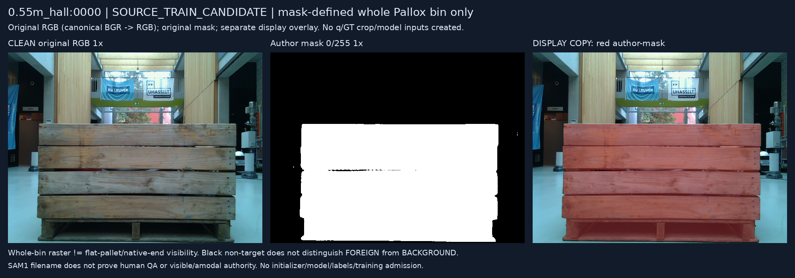
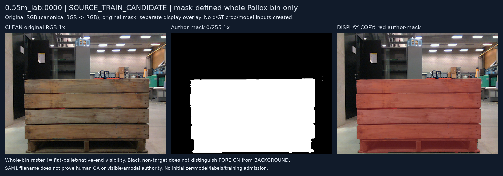
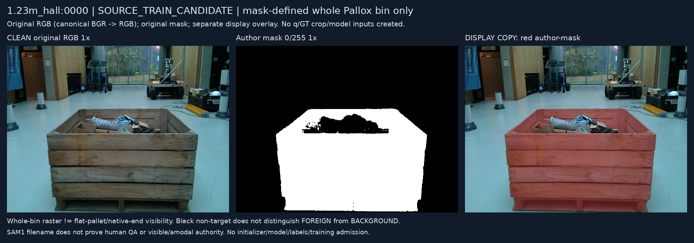
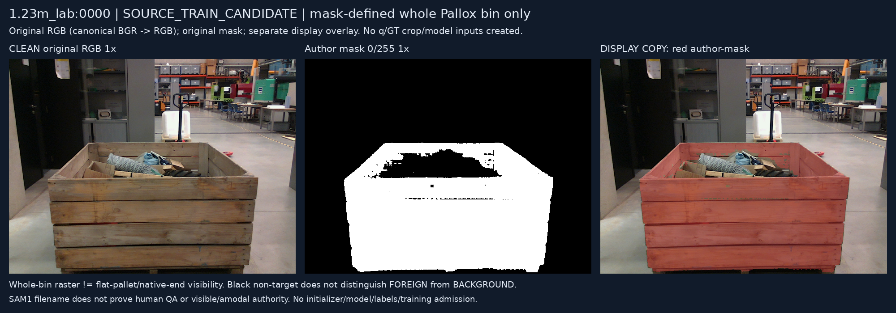
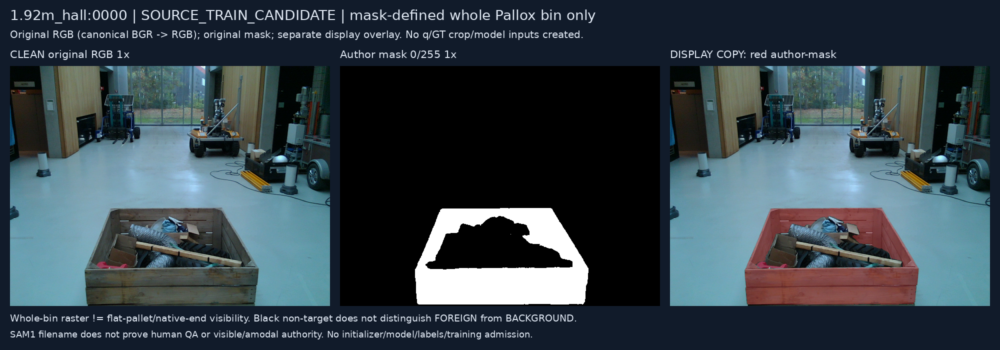
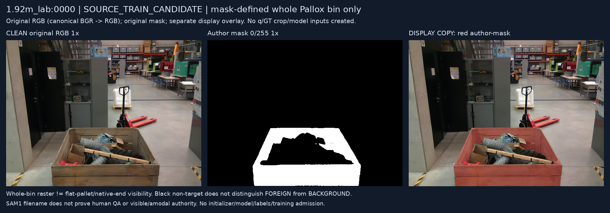
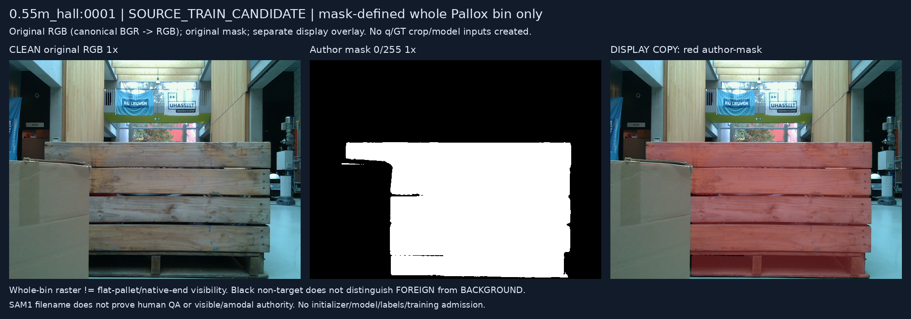
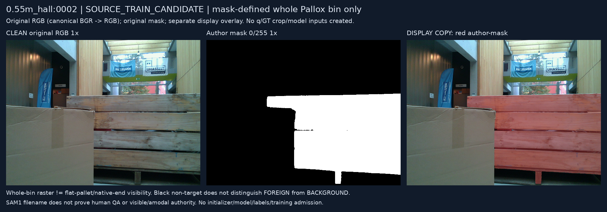

전체322 SOURCE_TRAIN_CANDIDATE census의 metadata 선택이며 학습·initializer·모델 추론·새 정답은 없습니다. 원 RGB/마스크 payload 및 dtype/값을 보존했습니다. 마스크는 whole bin이며 native/end/external/self 정답이 아닙니다. SAM1 humanQA/visible-amodal 권한은 미확정입니다. HTML 브라우저 렌더 검증 주장은 없습니다.







